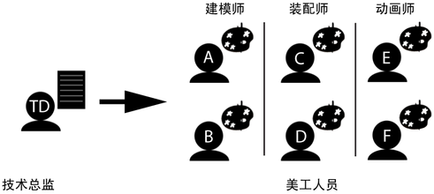
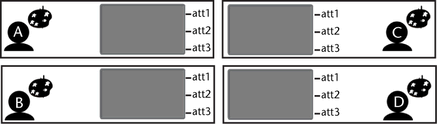
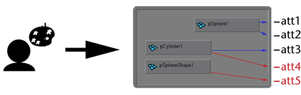

如果一位技术总监需要为处理一个项目的所有部门详细定义资产，则以下工作流将非常有用。例如，假设一个制作游戏的工作室需要多个可互换角色和道具。

技术总监知道游戏的角色和道具要求以及它们之间的关系。此外，他还知道建模师、索具装配师和动画师制作的内容需要如何交互。
以下工作流可让技术总监将这些要求传达给不同的内容创建者。
- 技术总监评估游戏需求，确定每个部门需要的交付内容。
- 技术总监创建一组资产模板，并在其中预先填充可供美工人员使用的已发布名称、已发布节点和视图。这样可以为美工人员提供引导，验证其创建的资产是否是技术总监要求的资产。
- 美工人员打开资产并更改为适合其部门的视图。
- 美工人员在构建资产内部的同时，将合适的属性与模板的已发布属性名称绑定。如果技术总监为模板创建了一个绑定集，则美工人员也可以使用“自动绑定”(Autobind)来自动实现此步骤。

- 完成模板后，美工人员向下游美工人员发布可能需要的其他属性。

- 美工人员保存资产并通知总监。
- 总监审阅模板文件的完整性，并确保任何新的已发布属性都已正确放置在标准生产模板中。
- 技术总监对资产进行最终修改，然后批准将其交给下个部门。